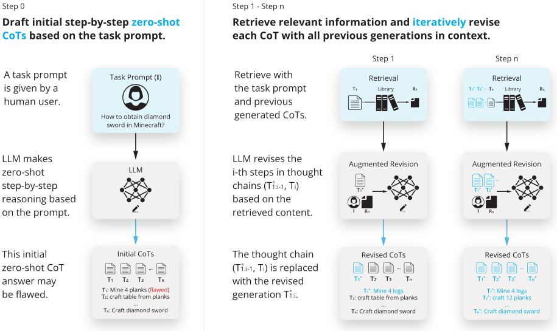
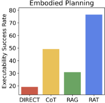
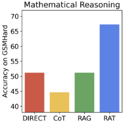
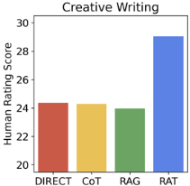
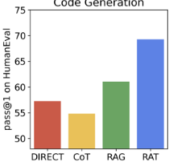

RAT：检索增强思维（Retrieval Augmented Thoughts）激发长程生成中的上下文感知推理
LLM 在代码生成、数学推理、具身规划、创意写作等长程生成任务中，zero-shot CoT 的中间推理步骤常因幻觉出错，而经典 RAG 一次性检索难以预知后续步骤所需信息。论文提出 RAT（Retrieval Augmented Thoughts）：先让 LLM 生成初始 zero-shot CoT，再以任务 prompt 与当前及已修订的历史 thoughts 构造检索 query，用外部知识库逐个修订每个 thought 步骤，最后基于修订后的 CoT 分步生成最终回答。在 GPT-3.5、GPT-4、CodeLLaMA-7b 上，代码生成平均相对提升 13.63%、数学推理 16.96%、创意写作 19.2%、Minecraft 规划 42.78%；消融证明“用 RAG 修订 CoT”与“因果式渐进修订”两个设计均不可或缺。对团队而言，这是一种无需训练、即插即用的 RAG×CoT 上下文组织模式，可直接用于知识库问答、代码生成与 Agent 规划场景的幻觉治理。
LLM 在长程生成任务（代码生成、数学推理、具身任务规划、创意写作）中，zero-shot CoT 的中间推理步骤（thoughts）易含幻觉与事实错误；同时经典 RAG 难以把复杂多步推理转成有效检索 query，且一次性检索无法预知后续推理步骤所需的信息，导致检索增强与长程推理难以有效结合。
RAT 是一种 zero-shot 提示策略，将 CoT 与 RAG 协同：1) 先用 “let's think step by step” 让 LLM 生成初始分步 thoughts（如伪代码、文章大纲、子目标列表）；2) 修订第 i 步时，用任务 prompt、当前 thought 与已修订的历史 thoughts（因果式，仅用 T*1:i-1）经 ToQuery（文本编码器或 LLM）生成检索 query，从外部知识库检索相关文档并前置到 prompt 中修订该步——代码/数学用 codeparrot/github-jupyter 向量库，Minecraft 规划用 Minecraft Wiki 与 DigMinecraft，创意写作用 Google 搜索，嵌入统一用 text-embedding-ada-002；3) 基于全部修订后的 thoughts 分步生成最终回答（代码、文章或计划）。
平均相对提升：代码生成 13.63%、数学推理 16.96%、创意写作 19.2%、具身任务规划 42.78%（跨 GPT-3.5/GPT-4/CodeLLaMA-7b）
代码生成：HumanEval +20.94%（pass@1 最高提升 20.94%、pass@5 提升 25.68%）、HumanEval+ +18.89%、MBPP +14.83%、MBPP+ +1.86%
数学推理：GSM8K +8.36%、GSMHard +31.37%；GPT-3.5 上平均相对提升 18.44%，GPT-4 上相对提升 10.26%
Minecraft 具身规划：executability 达 76.67±8.02%（相对提升 2.96 倍），plausibility TrueSkill 人工评分 29.37（+51.94%）
创意写作：人工 TrueSkill 评分相对提升 19.19%
消融：RAT 检索策略较 RAG-1 基线在 HumanEval pass@1/pass@5 分别高 8.7/7.9 个百分点；因果式修订较 CoT 基线 pass@1/pass@5 分别高 11.9/4.6 个百分点
CodeLlama-7b 基于 RAT 在 MBPP+ 上出现性能下降
区别于经典 RAG 用原始问题一次性检索，RAT 以推理过程本身（当前与历史修订后的 thoughts）自回归地构造检索 query，并逐个因果式修订 thought 而非整体修订完整 CoT，避免把原本正确的步骤改错；相比 IRCoT、IRGR、GEEK、ITRG 等推理增强 RAG 工作多采用单次 query 检索，RAT 用推理与草稿答案以自回归方式持续检索，且全程 zero-shot、无需任务特定提示或示例。
相关度级别：high
命中能力域：3.1 上下文工程与记忆 | 3.2 提示工程 | 3.5 评测与可靠使用
理由：直接命中 3.1（RAG/检索增强与上下文组织：迭代式 query 构造、把检索结果组织进 prompt 逐步修正推理）与 3.2（CoT/推理提示与 zero-shot 提示策略），核心正是团队“如何组织上下文与提示把模型用对”的命题；论文以缓解幻觉为目标并用多基准加人工评测验证可靠性，与 3.5 相关。方法不涉及训练，工程上只需编排多次“生成 query→检索→修订”调用即可叠加到现有 LLM 应用，落地门槛低、收益可量化。
建议动作：深入精读并做内部分享
arXiv:2403.05313v1 [cs.CL] 8 Mar 2024
Craft Jarvis
2024年3月
Zihao Wang 1、Anji Liu 2、Haowei Lin 1、Jiaqi Li 3、Xiaojian Ma 3 与 Yitao Liang 1
1 北京大学，2 加利福尼亚大学洛杉矶分校，3 北京通用人工智能研究院
我们探索了如何借助信息检索迭代地修订思维链（chain-of-thought, CoT），从而显著提升大语言模型在长程生成任务中的推理与生成能力，同时大幅缓解幻觉问题。具体而言，所提出的方法——检索增强思维（retrieval-augmented thoughts, RAT）——在初始零样本 CoT 生成之后，利用与任务查询、当前及过去思维步骤相关的检索信息，逐一修订每个思维步骤。将 RAT 应用于 GPT-3.5、GPT-4 和 CodeLLaMA-7b，可显著提升它们在各类长程生成任务上的表现；评分相对提升平均达：代码生成 13.63%、数学推理 16.96%、创意写作 19.2%、具身任务规划 42.78%。演示页面见 https://craftjarvis.github.io/RAT 。
大型语言模型（Large Language Models，LLMs）在各类自然语言推理任务上取得了丰硕的进展（Brown et al., 2020; Wang et al., 2023a; Wei et al., 2022; Yao et al., 2022; Zhou et al., 2023），尤其是当大规模模型（OpenAI, 2023; Team, 2022）与精巧的提示策略相结合时，其中最著名的是思维链（chain-of-thought，CoT）提示（Kojima et al., 2022; Wei et al., 2022）。然而，人们对 LLMs 推理的事实正确性日益担忧，其依据是模型响应（Rawte et al., 2023）或中间推理路径（即 CoT）中可能存在的幻觉（Dhuliawala et al., 2023）。当涉及零样本 CoT 提示，即“让我们一步步思考”（'let's think step-by-step'）(Kojima et al., 2022)，以及需要多步且具备上下文感知能力的推理的长程生成任务（包括代码生成、任务规划、数学推理等）时，这一问题变得更加突出。事实上有效的中间思维对于这些任务的成功完成可能至关重要。
为缓解这一问题，已有多种提示技术被提出；其中一个有前景的方向——检索增强生成（Retrieval Augmented Generation，RAG）(Lewis et al., 2020b)——从人类推理中汲取启发（Holyoak and Morrison, 2012），并利用检索到的信息来促成更具事实依据的推理。在本文中，我们探索如何将 RAG 与复杂的长程推理相协同。我们的直觉是，中间推理过程中的幻觉可以借助外部知识得到缓解。由此得到的提示策略——检索增强思维（retrieval-augmented thoughts，RAT）——如图 1 所示。我们的策略包含两个关键思想。首先，LLMs 生成的初始零样本 CoT 连同原始任务提示将被用作查询，以检索有助于修订可能存在缺陷的 CoT 的信息。其次，我们设计了一种渐进式方法，而非使用完整的 CoT 一次性完成检索、修订并生成最终响应：LLMs 按照 CoT（一系列子任务）逐步生成响应，并且仅基于利用任务提示、当前及过去 CoT 检索到的信息来修订当前思维步骤。这一策略可以类比于人类推理过程：在复杂的长程问题求解过程中，我们利用外部知识来调整自己的逐步思考（Holyoak and Morrison, 2012）。RAT 与同类方法的比较见图 2。
我们在一系列广泛且具有挑战性的长程任务上对 RAT 进行了评估，包括代码生成、数学推理、具身任务规划和创意写作。我们采用了多个不同规模的大语言模型（LLMs）：GPT-3.5 (Brown et al., 2020)、GPT-4 (OpenAI, 2023)、CodeLLaMA7b (Rozière et al., 2023)。结果表明，将 RAT 与这些 LLM 相结合，相比朴素的思维链（CoT）提示和检索增强生成（RAG）方法展现出显著优势。特别地，我们在所选的各项任务上均观察到了新的最先进（state-of-the-art）水平的表现：1）代码生成：HumanEval（+20.94%）、HumanEval+（+18.89%）、MBPP（+14.83%）、MBPP+（+1.86%）；2）数学推理问题：GSM8K（+8.36%）和 GSMHard（+31.37%）；3）Minecraft 任务规划（可执行性提升至 2.96 倍，合理性提升 51.94%）；4）创意写作（人类评分提升 19.19%）。我们额外的消融实验进一步证实了 RAT 两个关键要素所发挥的重要作用：利用 RAG 修订 CoT，以及渐进式的修订与生成。这项工作揭示了 LLM 如何以零样本（zero-shot）的方式借助外部知识来修订自身的推理过程，正如人类所做的那样。
通讯作者：Yitao Liang yitaol@pku.edu.cn <Zihao Wang> zhwang@stu.pku.edu.cn <Anji Liu> liuanji@cs.ucla.edu <Haowei Lin> linhaowei@pku.edu.cn <Jiaqi Li> ljqjane@gmail.com <Xiaojian Ma> xiaojian.ma@ucla.edu

Our goal is to support long-horizon reasoning and generation while mitigating hallucination when using LLMs. To have satisfying performance on long-horizon tasks, two ingredients are indispensable. Firstly , access to factual information can be facilitated by retrieval. Secondly, appropriate intermediate steps that outline a scratchpad to finish complex tasks, can be facilitated by CoT. Yet, a naive combination of the two would not necessarily yield improvements. Two questions still persist: (1) what is relevant information to retrieve; (2) how to effectively correct reasoning steps with relevant factual information. To better appreciate our method and why our method can address these two questions, we first provide a brief preliminary introduction of RAG and CoT.
检索增强生成（Retrieval-Augmented Generation, RAG）旨在解决生成虚构事实的问题，其通过 pro-
2
Q: 介绍金庸的生平。A: 金庸，原名 Louis Cha，1924 年出生……从剑桥大学毕业后，😿
他后来开始全职写作，为中国文学与文化留下了不可磨灭的印记……[信息量不足，结构松散]
Q: 介绍金庸的生平。A: 金庸，原名 Louis Cha，1924 年出生……在他八十多岁时，他向剑桥大学申请了亚洲研究方向的博士学位，并向北京大学申请了中国文学方向的第二个博士学位……[过于具体，结构松散]

Q: 介绍金庸的生平。让我们一步一步地思考。
A: 金庸是一位中国小说家……他的生平细节介绍如下：
早年生活：金庸，1924 年 2 月 6 日出生……
教育经历：……他在投身专职写作之前毕业于剑桥大学……😿
文学创作：他的第一部小说《书剑恩仇录》于 1955 年出版，随后又创作了包括《绝代双骄》在内的多部成功作品……
😾
Q: Introduce Jin Yong's life. Let's think it step-by-step. A: Jin Yong is a Chinese novelist... The details of his life are introduced as follows:
Early Life : Jin Yong, born on February 6, 1924, in Haining, Zhejiang province, China, was a renowned Chinese novelist known by his pen name Louis Cha.... Education : ...In his eighties, he applied at Cambridge University for a doctorate in AsianStudies and another doctorate in Chinese literature at Peking University...
Literature : In 1955, Jin Yong published his first arts novel, "The Book and the Sword," which achieved immense success and marked the beginning of his literary journey. He went on to write many acclaimed novels, including the revered "Legends of the Condor Heroes" and "The Deer and the Cauldron." 😸



viding LLMs with relevant text extracted from trusted sources. It is primarily used in questionanswering (QA) tasks (Lewis et al., 2020b). Specifically , given a set of 𝑛 candidate documents 𝑅 : = { 𝑅𝑖 } 𝑛 𝑖 = 1 , RAG aims to retrieve the most relevant ones w.r.t. a query 𝑄 , which can be the question/task prompt itself or relevant information generated by LLMs. To achieve this, RAG first extracts semantic-aware embeddings of the documents 𝑟 𝑖 : = emb ( 𝑅𝑖 ) ∈ ℝ 𝐾 ( 𝐾 is the size of the embedding) as well as the query 𝑞 : = emb ( 𝑄 ) ∈ ℝ 𝐾 . emb (·) can be implemented with various text embedding models, such as Sentence-BERT (Reimers and Gurevych, 2019). The relevance between the query and a document is measured by their cosine similarity:
Based on their relevance, the top-ranked 𝑘 documents are then fed into the prompt for LLMs to generate the final answer. With such rich and factual contexts, RAG mitigates the hallucination of LLMs. However, complex reasoning tasks (e.g., those requiring multi-step reasoning) can be difficult to translate into effective search queries, leading to challenges in finding relevant documents and making RAG less applicable. Traditionally, RAG retrieves all relevant information at once. Yet, it overlooks the fact that it is difficult to predict what 'facts" or information is required in the subsequent reasoning and generation steps. The task prompt itself is hardly sufficient to provide enough clues for this.
Chain of Thoughts (CoT) prompting is designed to enhance the performance of LLMs under tasks that require complex reasoning steps (Wei et al., 2022), such as multi-step math word problems. Specifically, instead of tasking LLMs to generate the correct answer directly, CoT prompting incentivizes LLMs to first output intermediate reasoning steps, termed thoughts, that serve as a scratch space for the task, before summarizing
输入：任务提示 𝐼，自回归大语言模型 𝑝𝜃
⊲ 生成零样本（zero-shot）的初始逐步思考 𝑇 ⊲ 草稿答案 𝑇★ 以第一个思考步骤 𝑇1 初始化
将思考总结为最终答案。大语言模型的这种行为既可以在零样本情况下，通过鼓励 CoT 推理的提示词（例如 "let's think step by step"）(Kojima et al., 2022) 来激发，也可以通过在类似任务中执行 CoT 的少样本（few-shot）示例来触发。然而，由于中间思考没有受到直接的监督，大语言模型可能因缺乏相关领域知识而出错 (Touvron et al., 2023)，或因幻觉而产生偏差 (Rawte et al., 2023)。
为缓解上述 CoT 提示与 RAG 存在的问题，我们的直觉做法是：应用 RAG 来修订由 CoT 提示生成的每一个思考步骤。整体流程概览见图 1 和算法 1。具体而言，给定任务提示 I，我们首先以零样本（zero-shot）方式提示大语言模型（LLM）逐步生成思考（'let's think step-by-step'）𝑇 : = { 𝑇𝑖 } 𝑛 𝑖 = 1，其中 𝑇𝑖 表示第 𝑖 个思考步骤。在长程生成任务中，𝑇 既可以是中间推理步骤，例如代码生成中带注释的伪代码、创意写作中的文章大纲等，也可以是响应草稿本身，例如图 1 所示的具身任务规划中的子目标列表。
由于 𝑇 可能存在缺陷（例如包含幻觉），我们接下来会使用 RAG 修订每一个已生成的思考步骤，然后再基于这些思考步骤生成最终响应。具体而言，假设此前的思考步骤均已修正完毕，现在即将修订 𝑇 1: 𝑖，我们首先将文本 { I , 𝑇 1 , . . . , 𝑇 𝑖 } 转换为查询 𝑄𝑖：
其中 ToQuery (·) 既可以是文本编码器，也可以是一个 LLM，用于将任务提示 I、当前及过去的思考步骤 𝑇 1 , . . . , 𝑇 𝑖 转换为可供检索系统处理的查询 𝑄𝑖。我们采用 RAG，利用 𝑄𝑖 检索相关文档 𝑅𝑖，然后将这些文档前置到提示中，以生成修订后的思考步骤 𝑇 ★ 𝑖 。
最后，视实际任务而定，修订后的思考步骤 𝑇 ★ 1: 𝑛 可以直接用作模型的最终响应，例如具身任务规划。而对于代码生成或创意写作这类任务，则会进一步提示 LLM，以逐步的方式根据每个修订后的思考步骤生成完整的响应（代码、文章）。
需要注意的是，在修订第 𝑖 个思考步骤 𝑇𝑖 时，我们既不是仅使用当前步骤 𝑇𝑖，也不是使用完整的思维链 𝑇 1 , . . . , 𝑇 𝑛 来生成供 RAG 使用的查询，而是确保查询 𝑄𝑖 由当前思考步骤 𝑇𝑖 和之前已修订的思考步骤 𝑇 ★ 1: 𝑖 - 1 生成，也就是说，我们采用因果推理的方式，利用 RAG 来修订思考：
这样一来，通过持续查阅不同的参考文本，可以修正原始思考 𝑇 中的错误，并确保每一步推理都基于最准确、最相关的信息，从而显著提升所生成输出的质量与可靠性。
4
关于我们的方法为何能够解决本节开头所提出的两个问题，我们的假设如下。首先，要了解复杂推理中将会用到哪些信息，最直接的方式就是“看到”推理步骤。我们的方法利用所有已生成的思考（thoughts）以及任务提示，为更有效的检索提供更多线索。其次，某些信息无法被直接检索到，尤其是与困难复杂问题的最终答案相关的信息。相比之下，检索与中间问题相关的信息则更容易实现，因为这些中间问题被假定较为简单。得益于许多推理任务所具有的组合特性，迭代式的检索过程也可能更加有效。第三，纠正潜在的幻觉需要有针对性。使用检索增强生成（RAG）修订完整的 CoT，可能会在本已正确的步骤中引入错误。而逐步逐一修订每一步则可能更为可靠。前两点回应了问题 (1)，最后一点回应了问题 (2)。定量证据可参见我们在 3.4 小节中的消融实验。
我们在一组多样化的基准测试（benchmark）上测试了所提出的方法 RAT，这些基准测试着重考察长程生成与推理。现有方法历来在这些基准测试中表现不佳；大语言模型（LLM）输出中的“幻觉”步骤十分明显。这些步骤要么未能紧扣原始查询，要么显然无效。我们建议读者参阅 3.3 小节（案例分析）以获取更详细的讨论。受篇幅限制，我们不会逐一介绍每个基准测试的设置，也不会完整讨论我们在每个基准测试上的结果。相反，本节全面展示了我们方法的性能，并着重提供初步的实证分析，以说明我们的方法为何有效、何时有效以及何时失效。
我们采用四组基准测试。
代码生成包括 HumanEval (Chen et al., 2021)、HumanEval+ (Liu et al., 2023b)、MBPP (Austin et al., 2021) 和 MBPP+ (Liu et al., 2023b)。这些基准测试涵盖了广泛的编程问题，从简单的函数实现到更复杂的算法挑战，为评估生成能力提供了一个稳健的测试平台。
数学推理评估在 GSM8K 和 GSM-HARD 数据集上进行，该数据集包含数千道多步骤数学问题 (Cobbe et al., 2021; Gao et al., 2022)。
我们开展创意写作任务以评估 RAT 的多样性，包括综述、摘要等，突出开放式文本生成的不同方面。
具身规划任务在开放式环境 Minecraft 上进行评估。一组共 100 个任务（范围从简单目标到具有挑战性的钻石目标）通过 MCTextWorld (Lin et al., 2023) 进行评估。
评估指标。对于代码生成，我们选择经典的通过率 pass@k 作为评估指标 (Chen et al., 2021; Liu et al., 2023b)，其中 𝑘 表示采样次数。对于数学推理任务，我们计算准确率来评估每一道题目，与 GSM8K 的既定指标保持一致 (Cobbe et al., 2021)。对于具身规划任务，我们计算 MC-TextWorld 中的计划执行成功率作为可执行性 (Lin et al., 2023)。我们还进行了 humanelo 评分评估，为具身规划（作为合理性）和创意写作任务计算 trueskill 评分 (Herbrich et al., 2006)。这些指标均为数值越高越好。
基线方法。为了建立全面且公平的比较格局，我们纳入了一系列基线方法。我们的基线包括原始语言模型（称为 DIRECT），以及检索 𝑛 个示例的检索增强生成（RAG）方法，如 Lewis et al. (2020b) 所述，该方法以单样本（1 shot）和多样本（5 shots）两种配置进行实例化。此外，我们还考察了零样本思维链（CoT）方法，该方法由 Kojima et al. (2022) 提出，通过模拟逐步推理过程，在零示例条件下辅助完成复杂问题求解任务。对于不同的方法，均使用相同的语言模型作为基础模型。为确保公平比较，所有方法均未使用基准测试中的示例作为上下文学习（in-context learning）的演示。
5
| Base Models.Base Models | Method.Method | HumanEval.pass@1 | HumanEval.pass@5 | HumanEval+.pass@1 | HumanEval+.pass@5 | MBPP.pass@1 | MBPP.pass@5 | MBPP+.pass@1 | MBPP+.pass@5 | Average ↑.pass@1 | Average ↑.pass@5 |
|---|---|---|---|---|---|---|---|---|---|---|---|
| DIRECT | 33.78% | 40.85% | 30.85% | 36.59% | 39.27% | 54.27% | 41.22% | 48.17% | 36.28% | 44.97% | |
| CoT | 27.86% | 29.58% | 25.12% | 27.83% | 31.99% | 55.91% | 42.19% | 47.51% | 31.79% | 40.21% | |
| RAG_1 shot CodeLlama-7b | 37.50% | 47.65% | 33.66% | 41.83% | 35.41% | 51.63% | 43.66% | 50.09% | 37.56% | 47.80% | |
| RAG_5 shot | 38.90% | 47.90% | 35.37% | 42.75% | 34.06% | 53.90% | 43.35% | 51.08% | 37.92% | 48.91% | |
| RAT | 39.57% | 51.34% | 36.22% | 46.50% | 40.86% | 60.63% | 39.14% | 48.04% | 38.95% | 51.63% | |
| Relative Improvement | Relative Improvement | 17.14% | 25.68% | 17.41% | 27.08% | 4.05% | 11.72% | -5.05% | -0.27% | 7.35% | 14.80% |
| DIRECT | 50.49% | 72.56% | 48.09% | 70.55% | 60.84% | 72.95% | 54.92% | 64.09% | 53.59% | 70.04% | |
| CoT | 47.31% | 75.88% | 41.72% | 74.85% | 55.19% | 65.49% | 47.69% | 62.94% | 47.98% | 69.79% | |
| GPT-3.5 | RAG_1 shot | 50.61% | 76.22% | 48.22% | 70.55% | 55.23% | 70.54% | 53.62% | 68.09% | 51.92% | 71.35% |
| GPT-3.5 | RAG_5 shot | 45.49% | 74.39% | 42.58% | 70.55% | 54.39% | 69.73% | 55.98% | 70.10% | 49.61% | 71.19% |
| GPT-3.5 | RAT | 59.27% | 80.49% | 56.31% | 76.07% | 59.31% | 74.74% | 59.10% | 72.61% | 58.50% | 75.98% |
| Relative Improvement | Relative Improvement | 17.39% | 10.93% | 17.09% | 7.82% | -2.51% | 2.45% | 7.61% | 13.29% | 9.17% | 8.48% |
| DIRECT | 57.32% | 78.66% | 54.36% | 76.69% | 60.00% | 76.07% | 66.13% | 78.53% | 59.45% | 77.49% | |
| CoT | 54.87% | 72.56% | 51.90% | 66.25% | 61.22% | 74.23% | 64.42% | 79.75% | 58.10% | 73.20% | |
| RAG_1 shot GPT-4 | 61.10% | 79.27% | 58.04% | 77.30% | 58.53% | 69.94% | 65.77% | 77.30% | 60.86% | 75.95% | |
| RAG_5 shot | 62.80% | 82.93% | 59.51% | 79.75% | 60.12% | 74.23% | 63.56% | 78.53% | 61.50% | 78.86% | |
| RAT | 69.33% | 88.40% | 64.63% | 82.21% | 68.90% | 79.85% | 67.36% | 82.14% | 67.55% | 83.15% | |
| Relative Improvement | Relative Improvement | 20.94% | 12.38% | 18.89% | 7.20% | 14.83% | 4.97% | 1.86% | 4.60% | 13.63% | 7.31% |
| Base Models.Base Models | Method.Method | HumanEval.pass@1 | HumanEval.pass@5 | HumanEval+.pass@1 | HumanEval+.pass@5 | MBPP.pass@1 | MBPP.pass@5 | MBPP+.pass@1 | MBPP+.pass@5 | Average ↑.pass@1 | Average ↑.pass@5 |
| Method.Method | Math Reasoning Accuracy ∗ ↑.GSM8K | Math Reasoning Accuracy ∗ ↑.GSMHard | Math Reasoning Accuracy ∗ ↑.Average ( Δ ) | Creative Writing ↑.Win Rate | Creative Writing ↑.TrueSkill Rating ( Δ ) | Creative Writing ↑.Uncertainty | Embodied Planning ↑.Executablity | Embodied Planning ↑.Plausibitlity ( Δ ) | Embodied Planning ↑.Uncertainty |
|---|---|---|---|---|---|---|---|---|---|
| DIRECT | 65.85% | 51.26% | 58.56% | 46.67% | 24.39 | 1.17 | 19.33±2.08% | 20.57 | 2.05 |
| CoT | 63.82% | 44.72% | 54.27(-7.32)% | 41.67% | 24.31(-0.0%) | 1.09 | 49.33±3.05% | 25.75(+25.2%) | 2.33 |
| RAG-1 shot | 61.81% | 51.26% | 56.54(+4.17)% | 38.71% | 23.99(-1.6%) | 1.11 | 31.00±5.29% | 24.97(+21.4%) | 2.11 |
| RAG-5 shot | 61.81% | 56.78% | 59.30(+4.88)% | 31.67% | 23.88(-2.1%) | 1.22 | 33.00±3.61% | 25.02(+21.6%) | 2.11 |
| RAT | 71.36% | 67.34% | 69.35(+16.96)% | 81.01% | 29.07(+19.2%) | 1.08 | 76.67±8.02% | 29.37(+42.78%) | 3.37 |
| Method.Method | Math Reasoning Accuracy ∗ ↑.GSM8K | Math Reasoning Accuracy ∗ ↑.GSMHard | Math Reasoning Accuracy ∗ ↑.Average ( Δ ) | Creative Writing ↑.Win Rate | Creative Writing ↑.TrueSkill Rating ( Δ ) | Creative Writing ↑.Uncertainty | Embodied Planning ↑.Executablity | Embodied Planning ↑.Plausibitlity ( Δ ) | Embodied Planning ↑.Uncertainty |
RAG 设置。RAT 利用了检索增强生成方法的能力，这类方法通过整合外部知识源来提升语言模型的性能。具体而言，对于代码生成和数学推理任务，我们采用 codeparrot/github-jupyter 数据集作为主要的搜索向量库。对于 Minecraft 中的具身规划任务，我们使用 Minecraft Wiki 1 和 DigMinecraft 2 网站作为 LLM 可访问的信息源。
1 https://minecraft.wiki/
2 https://www.digminecraft.com/
对于开放式创意写作任务，我们使用 Google 在互联网上搜索查询内容。在不同方法和基础模型的所有嵌入计算中，我们均采用了 OpenAI 的 text-embedding-ada-002 API 服务。
鉴于存在基准测试污染的风险（即代码库中可能包含与所评估问题完全相同的解决方案这一问题），我们采用了 Guo 等人（2024）所描述的严格预处理方法。基准测试污染的潜在影响，以及我们预处理策略的有效性，将在附录 D 中详细讨论。
表 1 中给出的代码生成结果以及表 2 中给出的在其他基准测试（benchmark）上的结果，展示了在多个基准测试上对 RAT 所进行的全面评估。RAT 在大多数基准测试和指标上始终优于其他方法，展现了其生成长程上下文的卓越能力。值得注意的是，在代码生成的 HumanEval 和 HumanEval+ 基准测试中，RAT 在 pass@1 和 pass@5 通过率上取得了显著提升，表明其在首次尝试以及前五次尝试内的准确率均有显著增强。例如，在 HumanEval 基准测试上，相对于基础模型的性能，RAT 将 pass@1 提升了最高 20.94%，将 pass@5 提升了最高 25.68%。这一趋势在不同的底层基础模型上均可观察到，凸显了无论初始模型能力如何，RAT 都能保持有效。对于数学推理任务，RAT 展现出显著的相对提升：在 GSM8K 上准确率提高了 8.37%，在 GSMHard 上更是显著提高了 31.37%；当部署于 GPT-3.5 模型时，总体平均提升达到 18.44%。在 Minecraft 中的开放式具身规划任务上，RAT 显著优于所有其他方法，取得了最高分数：可执行性达 76.67±8.02%，合理性的人类评分为 29.37，展示了其在复杂开放世界环境中生成可行且符合上下文的规划的卓越能力。RAT 的卓越性能同样贯穿于广泛的创意写作任务之中。其在多样化场景中生成高质量内容的能力得到了验证，凸显了其作为强大工具的潜力，可用于增强大语言模型（LLMs）在开放式场景中的通用创意写作能力。
6
这些任务极为多样，而 RAT 仍能在所有基线方法上取得一致的改进。这些结果凸显了 RAT 方法的优势，该方法利用基于不断演化的推理思考对检索查询进行迭代细化。这一策略不仅提升了所检索信息的相关性和质量，还显著提高了所生成上下文的准确性和效率。
在此，我们选取具身规划任务和创意写作任务进行案例分析。
与多文档问答任务（Trivedi et al., 2022a）类似，Minecraft 中的长程规划任务是知识密集型的，完成每个任务需要考虑各种各样的物品。然而，互联网上有关 Minecraft 开放世界的知识是碎片化的，任务完成往往依赖于来自多个来源的信息。我们观察到，虽然 ChatGPT 等语言模型能够通过零样本思维链（CoT）推理识别出必要的物品，但程序步骤中常出现不准确之处。例如，ChatGPT 错误地将制作工作台所需的材料识别为 4 个木头方块（正确答案是 4 块木板），这表明 CoT 计划的可执行可靠性较低。经典的检索增强生成（RAG）算法以问题作为查询来检索知识，并聚焦于最终目标物品，对中间物品的检索不足，带来的任务改进甚微。相比之下，RAT 通过有针对性的检索不断细化思考，从而在 CoT 初始答案的基础上加以改进，使其与任务进展及相关物品知识紧密契合。这一方法确保了对计划所涉及全部物品的全面理解与检索，从而显著提升了规划的有效性，凸显了结构化推理与动态知识检索在应对 Minecraft 长程规划挑战时的协同作用。
在处理开放式创意写作任务时，对语言模型（LM）生成内容的评估通常聚焦于完整性和准确性。当任务为“按时间线总结美国内战”时，采用 DIRECT 和 CoT 提示的语言模型往往会产生严重的幻觉。例如，“内战于 1860 年 4 月 12 日正式爆发，南方邦联军队袭击了南卡罗来纳州的萨姆特堡——一座由联邦军控制的要塞”这一陈述包含错误信息，其中提到的 1860 年是错误的，正确年份应为 1861 年。
针对该任务直接向互联网查询往往只能检索到有限的事件，常常遗漏战争准确的开始日期，即 1861 年 4 月 12 日。此外，倾向于对检索内容进行总结的 RAG 方法，无论是 RAG-1 还是 RAG-5，其回答中常常遗漏这一事件。另一方面，RAT 基于语言模型的答案草稿进行搜索，发现幻觉通常出现在细节之处，例如具体日期，而这些细节并不妨碍搜索引擎识别诸如“美国内战开始日期”之类的相关信息。RAT 利用检索到的内容来识别并纠正答案草稿中的错误，而非仅仅对检索到的内容进行总结。因此，RAT 能够通过推理实现完整的生成，并借助检索到的知识提升答案的准确性与可信度。实验结果验证了 RAT 的有效性。
7
| Method. | HumanEval.pass@1( Δ ) ↑ | HumanEval.pass@5( Δ ) ↑ | HumanEval+.pass@1( Δ ) ↑ | HumanEval+.pass@5( Δ ) ↑ |
|---|---|---|---|---|
| Baseline | 50.6% | 76.2% | 48.2% | 70.5% |
| CoT+RAG | 53.9(+3.3)% | 76.8(+0.6)% | 51.3(+3.1)% | 69.3(-1.2)% |
| RAT | 59.2(+8.7)% | 80.4(+7.9)% | 56.3(+8.2)% | 76.0(+5.5)% |
| Method. | HumanEval.pass@1( Δ ) ↑ | HumanEval.pass@5( Δ ) ↑ | HumanEval+.pass@1( Δ ) ↑ | HumanEval+.pass@5( Δ ) ↑ |
RAT 中检索的消融实验。在本消融研究中，我们研究了各种检索策略对 RAT 有效性的影响，重点关注内容检索的优化以改进生成输出。表 3 中详细列出的实验结果突显了与基线方法相比，RAT 通过对检索查询的迭代细化所取得的显著进展。记为 RAG-1 的基线方法采用直接方式，将问题本身用作检索查询。相比之下，CoT+RAG 通过将语言模型输出的全部推理思考用作查询来增强这一过程，以实现更广泛的上下文理解。然而，RAT 引入了一种更为动态的方法，将持续修改的推理思考部分用作查询，从而实现更聚焦、更相关的信息检索过程。对比分析表明，在 HumanEval 和 HumanEval+ 基准测试上，RAT 在 pass@1 和 pass@5 指标方面均优于基线方法和 CoT+RAG 方法。具体而言，在 HumanEval 基准测试中，RAT 的 pass@1 相比基线提升了 8.7 个百分点，pass@5 提升了 7.9 个百分点，在 HumanEval+ 基准测试中也取得了同样令人瞩目的提升。这些改进凸显了 RAT 检索策略的有效性：该策略基于不断演进的推理思考和先前的查询对后续查询进行迭代细化，从而确保检索到高度相关的信息。这一过程不仅提升了所检索信息的相关性，还显著提高了最终生成输出的质量和准确性。这些结果有力地确立了 RAT 动态检索方法在利用上下文细微差别以驱动更精确、更有效的生成过程方面的优越性。
| Method.Method | HumanEval.pass@1( Δ ) ↑ | HumanEval.pass@5( Δ ) ↑ | HumanEval+.pass@1( Δ ) ↑ | HumanEval+.pass@5( Δ ) ↑ |
|---|---|---|---|---|
| Baseline | 47.3% | 75.8% | 41.7% | 74.8% |
| Non-Causal | 57.3(+10.0)% | 78.0(+2.1)% | 54.9(+13.2)% | 74.8(+0.0)% |
| Causal | 59.2(+11.9)% | 80.4(+4.6)% | 56.3(+14.6)% | 76.0(+1.2)% |
| Method.Method | HumanEval.pass@1( Δ ) ↑ | HumanEval.pass@5( Δ ) ↑ | HumanEval+.pass@1( Δ ) ↑ | HumanEval+.pass@5( Δ ) ↑ |
RAT 中因果推理的消融实验。在本消融研究中，我们系统地考察了因果推理与非因果推理方法对 RAT 系统性能的影响，并以思维链（Chain of Thought, CoT）作为基线。如表 4 所总结的发现表明，引入因果推理技术后，生成能力获得了显著提升。具体而言，因果方法通过迭代地执行推理与检索，在 HumanEval 和 HumanEval+ 基准测试上使 pass@1 和 pass@5 两项指标均取得了显著改进。例如，在 HumanEval 数据集上，因果方法在 pass@1 指标上比基线（CoT）高出 11.9 个百分点，在 pass@5 指标上高出 4.6 个百分点。与之形成对比的是非因果方法：该方法虽然同样超越了基线，但其做法是利用初始推理思路直接检索所有必要步骤并生成最终答案。因果方法的优越性能凸显了顺序推理与信息检索在提升生成输出的准确性与可靠性方面的价值。这一迭代过程很可能有助于基于持续更新的上下文来细化搜索与推理步骤，从而实现更精确、更相关的信息检索，进而支撑更准确的最终答案。
8
这些结果有力地确立了因果推理在长程问题求解任务中的有效性。
RAT 在多种多样的任务上得到了严格验证，包括代码生成、数学推理、创意写作和具身规划。这种任务的多样性凸显了 RAT 的泛化能力，表明其在高度多样的挑战中均具有稳健的表现。此外，我们所有的实验设置均以零样本（zero-shot）方式进行；我们没有为 RAT 设计针对特定任务的提示，而是使用尽可能简单的提示（可在附录 B 中找到）来为所有方法表述问题或指令。这一做法确保了 RAT 在开放式场景中的泛化能力。
通过在不同能力水平的多种语言模型上测试 RAT，我们评估的多样性得到进一步增强。这些模型包括 CodeLlama-7b (Rozière et al., 2023)、ChatGPT (gpt-3.5-turbo) (Ouyang et al., 2022)，以及更先进的 GPT-4 (gpt-4) 模型 (OpenAI, 2023)。值得注意的是，RAT 在不同规模的语言模型上都保持了其泛化能力，在诸如用于代码生成任务的 HumanEval 等基准测试（benchmark）上均显示出提升。尤其值得关注的是，GPT-4 上观察到的提升最大，这归因于其从检索文本中进行上下文学习（in-context learning）的卓越能力。在 MBPP+ 上，基于 CodeLlama-7b 的 RAT 则出现了性能下降。这一下降可能是由于较小语言模型的上下文学习能力有限。
在数学推理任务上，RAT 展现出显著的相对提升，应用于 GPT-3.5 模型时总体平均提升达 18.44%。这一提升趋势在 GPT-4 上同样得以延续，从 DIRECT 到 RAT 实现了 10.26% 的显著相对提升。这些发现凸显了 RAT 的稳健性，以及其在一系列计算类与创意类任务中对语言模型性能的有效增强。
检索增强生成（Retrieval-augmented Generation，RAG）。近来，RAG 通过利用检索到的知识来引导大语言模型（LLM）的生成过程，从而提升 LLM 的性能，因此广受欢迎（Zhao et al., 2023）。RAG 无需更新模型参数——这种更新可能代价高昂（Lewis et al., 2020a）或不稳定（Ke et al., 2022a,b）——因而是 LLM 与外部世界交互的一种经济高效的方式（Gu et al., 2018; Lewis et al., 2020a）。RAG 已被广泛应用于各类下游任务，例如代码生成（Lu et al., 2022; Nashid et al., 2023; Zhou et al., 2022b）、问答（Baek et al., 2023; Siriwardhana et al., 2023）以及创意写作（Asai et al., 2023; Wen et al., 2023）。
推理增强的 RAG。近期的一些工作还利用推理来增强 RAG 的性能（Li et al., 2023b）。例如，IRCoT（Trivedi et al., 2022b）利用思维链（CoT）为检索生成更好的查询；IRGR（Ribeiro et al., 2022）执行迭代式检索，为多跳问答搜索合适的前提；GEEK（Liu et al., 2023a）在长程生成任务中可以选择查询外部知识或执行单步逻辑推理；ITRG（Feng et al., 2023a）则基于上一步的生成结果执行检索。然而，这些已有的 RAG 方法在问答任务中只是简单地采用单一查询来检索知识（Feng et al., 2023b; Gao et al., 2023），而我们提出的 RAT 则以自回归的方式利用推理和草稿答案进行检索，如图 2 所示，这显著提升了 RAG 在各种任务中的性能。
用于推理的语言模型。自 Wei et al. (2022) 提出思维链（CoT）以来，语言模型的推理研究涌现出许多值得关注的方法，该工作展示了语言模型（LMs）生成自主推导的问题求解策略的能力。这一奠基性工作催生了后续创新，例如最少到最多提示（least-to-most prompting）(Zhou et al., 2022a)、零样本 CoT (Kojima et al., 2022)、自洽性（self-consistency）(Wang et al., 2022)，以及无需提示的零样本 CoT (Wang and Zhou, 2024)。超越基础提示方法，Creswell et al. (2022) 提出了 Selection-Inference 框架，而 Zelikman et al. (2022) 则开发了 STaR，通过模型微调来改进推理。Creswell and Shanahan (2022) 提出了一种忠实推理模型，将推理过程划分为专门的步骤，这与 Nye et al. (2021) 为增强多步计算而提出的 Scratchpad 方法类似。思维树（Tree-of-Thought）(Yao et al., 2023) 与思维图（Graph-of-Thought）(Besta et al., 2023) 也将推理路径从线性 CoT 扩展为复杂的结构。这些方法通常旨在通过设计提示或提供来自环境的反馈来提升大语言模型（LLM）的推理能力，从而辅助更好的规划与决策 (Li et al., 2023a; Shinn et al., 2023; Wang et al., 2023c; Yao et al., 2022; Zhang et al., 2023)。然而，RAT 采取了不同的思路：利用检索增强生成（RAG）访问外部知识，从而在 LLM 的推理过程中为其提供帮助。
9
我们提出了检索增强思维（Retrieval Augmented Thoughts, RAT），这是一种简单而有效的提示策略，它将思维链（CoT）提示与检索增强生成（RAG）协同结合，以应对具有挑战性的长程推理与生成任务。我们的核心思想包括：以 LLM 生成的零样本思维链作为查询，通过 RAG 对其进行修订，并以因果方式逐步修订思维、生成响应。RAT 作为一种零样本提示方法，在具有挑战性的代码生成、数学推理、具身任务规划和创意写作任务上，相比原始 CoT 提示、RAG 及其他基线方法展现出了显著优势。
在本节中，我们将讨论 RAT 的如下三个局限性。
本工作的一个局限性在于，RAT 的性能依赖于基础 LLM 的思维链（CoT）推理与上下文学习（in-context learning）（或 RAG）能力。由于本工作不涉及任何模型训练，在应用 RAT 时，基础 LLM 的能力不会发生改变。尽管 RAT 在 GPT-3.5 和 GPT-4 等强大的 LLM 上取得了显著提升，但其对 GPT-2 等更小、更弱的 LLM 的效果则尚存疑问。除此之外，如何通过微调较弱的 LLM 来改进 RAT，也是一个值得进一步探索的有趣方向（Ke et al., 2023; Lin et al., 2024）。
本工作的另一个局限性在于，RAT 的性能还依赖于所检索知识的质量。当我们拥有的外部知识库质量欠佳且与用户查询不相关时，检索到的知识可能无助于 LLM 生成有用的信息。此外，即使我们选择一个包含相关信息的规模较大的知识库，维护这样一个庞大的知识库并从中进行检索的代价也十分高昂，同时还会损害检索精度。一个有趣且至关重要的方向是研究如何构建用于高效且有效检索的知识库，并评估其质量。
值得注意的是，上述两个局限性同样适用于传统的检索增强生成（RAG）研究。RAT 的最后一个局限性在于，我们遵循 CoT，以显式的逐步方式解决问题。有时，对于简单直接的问题，逐步思考可能是冗余的；而有些问题则需要更复杂的推理结构（例如 tree-of-thoughts (Yao et al., 2023)）。在我们的未来工作中，探索面向 LLM 的更优推理方法也颇具意义。
除 OpenAI 的 GPT 系列和文本嵌入 API 之外，所有数据集和模型均可公开获取。我们未发现与这项工作相关的任何重大伦理问题。我们相信，我们新提出的 RAT 能够改进大语言模型（LLM）在各个领域的生成，并减少 LLM 的幻觉。
10
基准测试（benchmark）。我们选择 HumanEval (Chen et al., 2021)、HumanEval+ (Liu et al., 2023b)、MBPP (Austin et al., 2021) 以及 MBPP+ (Liu et al., 2023b) 作为代码生成评估的基准测试。这些基准测试通常用于测试代码生成模型的性能，下面对其进行简要介绍：
这些基准测试涵盖了广泛的编程问题，从简单的函数实现到更复杂的算法挑战，为评估各种模型的生成能力提供了一个稳健的测试平台。
评估指标。我们采用 pass@k 指标来评估各种代码生成算法的有效性，遵循 Chen et al. (2021) 提出并由 Liu et al. (2023b) 扩展的方法。该指标量化了生成的代码片段成功执行并通过所有测试用例的比率，其中 𝑘 表示模型为每个问题生成的尝试次数或样本数量。这种方法使我们能够严格评估代码生成模型在多样化的编程挑战中生成功能正确代码的精确性与可靠性。
基线方法。为了建立一个全面且公平的比较格局，我们纳入了一套基线方法和多样化的代码生成模型。我们的基线包括原始的代码生成语言模型（称为 DIRECT），以及检索增强生成（RAG）方法（检索 𝑛 个示例），如 Lewis et al. (2020b) 所述，该方法以单样本（1 shot）和多样本（5 shots）两种配置进行实例化。此外，我们还考察了零样本思维链（CoT）方法，该方法由 Kojima et al. (2022) 提出，通过模拟逐步推理过程，在零演示条件下辅助完成复杂的问题求解任务。为确保公平比较，所有方法均未使用基准测试中的示例作为上下文学习（in-context learning）的演示。
通过在具有不同能力的多种语言模型上进行测试，我们评估的多样性得到进一步丰富，这些模型包括 CodeLlama-7b (Rozière et al., 2023)、ChatGPT（gpt-3.5-turbo）(Ouyang et al., 2022)，以及更先进的 GPT-4（gpt-4）模型 (OpenAI, 2023)。认识到代码输出中可能存在的格式差异，尤其是考虑到 gpt-3.5-turbo 和 gpt-4 等模型可能生成无法直接执行的 markdown 格式代码，我们实施了后处理步骤，将原始语言模型输出转换为可在沙箱环境中执行的形式。这种归一化处理确保所有模型都在统一的执行条件下接受评估，从而便于对其代码生成能力进行公平、直接的比较。通过这一方法学框架，我们旨在对各种 LLM 驱动的代码生成方法的性能格局提供细致而深入的理解。
15
检索增强生成（RAG）设置。RAT 利用了检索增强生成方法的能力，这类方法通过整合外部知识源来提升语言模型的性能。具体而言，我们采用 codeparrot/github-jupyter 数据集作为主要的搜索向量库。该数据集全面汇集了 45.2 万对 markdown 与代码配对，均精心提取自托管于 GitHub BigQuery 上的 Jupyter 笔记本，是编程知识与示例的丰富资源库。在不同方法与基础模型的所有嵌入计算中，我们均使用了 OpenAI 的 text-embedding-ada-002 API 服务。
基准测试（Benchmarks）。我们用于评估数学推理能力的评估框架采用了两个主要基准测试：GSM8K 数据集，其包含超过 8,000 道多步骤数学问题（Cobbe et al., 2021）；以及 GSM-HARD 数据集，它是 GSM8K 的一个改编版本，其中问题里的数字被替换为更大的数值以增加问题复杂度（Gao et al., 2022）。本研究采用 PAL 方法论来细致考察数学推理结果，其涉及利用大语言模型（LLMs）来解析自然语言问题、生成中间程序化解决方案，并随后通过 Python 解释器执行这些解决方案。每个基准测试的测试集由索引 1 至 200 的样本组成。独特之处在于，我们的方法不使用任何示例进行上下文学习（in-context learning），这与原始 PAL 方法有所不同。
评估指标与基线。准确率（Accuracy）作为我们的主要评估指标，与 GSM8K 基准测试的既定指标保持一致。每个问题均进行三次执行尝试，并将平均得分记录为最终结果。包括 DIRECT、CoT、RAG (1 shot) 和 RAG (5 shots) 在内的基线与代码生成部分所概述的基线保持一致，从而便于在不同代码生成基准测试之间进行全面且具有对比性的分析。RAG 的设置与代码生成任务保持一致。
我们进一步在开放式环境 Minecraft（Lin et al., 2023）的具身规划基准测试上开展了实验。
基准测试。开放世界 Minecraft 的复杂性以及物品之间庞大的互联关系，为评估 LLM 生成长程规划的能力提供了理想的测试平台（Wang et al., 2023b,c; Yuan et al., 2023）。由于拥有数千种物品以及它们之间错综复杂的关系，在生存模式下从零开始获取某个特定物品可能涉及数十种中间物品及其数量关系，例如用 4 块木板合成 1 个工作台。这一设置严格考验的是 LLM 的规划能力，而非底层控制策略（Baker et al., 2022; Cai et al., 2023a,b; Lifshitz et al., 2023; Yuan et al., 2024）。此外，Wang et al. (2023b) 发现 OpenAI 的 ChatGPT 中存在关于 Minecraft 知识的幻觉实例，且开源语言模型中普遍缺乏 Minecraft 相关知识，这使得该任务成为评估 RAG 算法有效性的合适基准测试。
规划提示与 DEPS（Wang et al., 2023c）中使用的提示保持一致，以 Python 模板的形式构建，并按照 Lin et al. (2023) 的详细说明使用 MC-TextWorld 进行评估。测试集随机选取了 100 个任务，范围从获取工作台这类简单目标，到合成铁头盔这类更复杂的目标，甚至包括颇具挑战性的制作附魔台。任务指令的表述如下：
16
共有超过 100 个涉及不同 Minecraft 物品的任务。
RAG 设置。对于 RAG 算法的检索组件，我们使用 Minecraft Wiki 3 和 DigMinecraft 4 网站作为 LLM 可访问的信息源。来自这些网站的数据经过清洗并格式化为 markdown 文本，随后被分割成每段不超过 2000 个 token 的文本块，并使用 OpenAI 的 text-embedding-ada-002 API 服务进行嵌入计算。
评估指标。基于 Huang et al. (2022) 的方法，我们对 Minecraft 中开放式长程规划的评估同时关注可执行性与合理性。可执行性主要考察一个规划能否被执行，包括每一步的前置条件和效果的准确性。可执行性通过 MC-TextWorld（Lin et al., 2023）自动计算。然而，可执行性仅评估目标层面的规划能否被执行，而未考虑执行各个目标时所涉及的具体细节。例如，合成一把木镐需要放置一个工作台，并按照特定的模式摆放三块木板和两根木棍，这些对于人类执行而言是重要的细节，但 MC-TextWorld 并不对其进行评估。因此，我们通过人工评分来补充评估，以衡量规划的合理性。
为了进一步理解检索增强生成（Retrieval-Augmented Generation, RAG）模型在提升所生成内容的创造力和相关性方面的潜力，我们将研究扩展到创意写作领域的开放式文本生成任务。
基准测试。我们通过一系列创意写作任务测试了 RAT 的通用性，每个任务的选择都旨在突出开放式文本生成的不同方面。这些任务包括：
对于每个任务，我们为占位符创建了三个变体，以确保能够在不同情境和要求下对模型性能进行全面评估。
RAG 设置。与之前的任务不同，创意写作被归类为开放式生成任务，需要更广泛的信息检索来辅助内容生成。为满足这一需求，我们采用 Google 作为搜索引擎，并将 top-k 网页转换为 markdown 文本，以辅助大语言模型（LLM）生成输出。这种方法使 LLM 能够利用广泛的信息来源。
基线与评估。为了对 RAT 的性能进行基准测试，我们将其与 DIRECT、RAG-1 shot 和 RAG-5 shot 方法进行比较，这些方法均基于 gpt-3.5-turbo 模型。评估由人类专家开展，采用 TrueSkill 评分系统（Herbrich et al., 2006）计算每种方法的分数。该评估框架能够对每个模型的创意输出质量、准确性、相关性和创新性进行全面评估。
3 https://minecraft.wiki/
4 https://www.digminecraft.com/
17
我们的提示词由三部分组成：用于生成初始答案的提示词、用于生成搜索查询的提示词，以及根据检索到的上下文对答案进行修订的提示词。
请直接响应指令。除非被要求，否则不要在回答中添加额外的解释或介绍。
请尝试以逐步思考的方式回答该问题/指令，并使答案更具结构性。使用 /n/n 将答案拆分为多个段落。
在代码生成任务中省略了查询生成过程。相反，我们使用生成的代码草稿作为查询，并基于 OpenAI Embedding 服务计算其嵌入向量。对于具身规划和创意写作任务，我们将额外生成一个查询。
我想验证给定问题的内容正确性，尤其是最后几句。
请将内容与对应的问题一起进行总结。
查询应当简短，但必须足够具体，以确保 Bing 能够找到相关的知识或页面。
该总结将用作通过 Bing 搜索引擎进行搜索的查询。
你也可以使用搜索语法，使查询足够简短清晰，以便搜索引擎找到相关的语言数据。
尽量使查询与内容中最后几句尽可能相关。
直接输出查询即可。除非被要求，否则不要在回答中添加额外的解释或介绍。
18
我想根据从 WIKI 页面中检索到的与该问题相关的文本，对答案进行修订。
你需要检查答案是否正确。
如果你发现某些必要的细节被忽略了，请根据相关文本将其补充进去，使答案更加可信。
如果你发现答案中存在错误，请修订答案使其更好。
如果你发现答案是正确的且不需要补充更多细节，则直接输出原答案。
尽量保持修订后答案中的结构（带小标题的多个段落），并使其结构更加清晰以便理解。使用 /n/n 字符分隔段落。直接输出修订后的答案。除非被要求，否则不要在修订后的答案中添加额外的解释或说明。
为了避免代码库中包含代码生成基准测试（benchmark）中所评估问题的确切解答，我们采用了 Guo 等人（2024）所描述的严格预处理方法。该流程经过精心设计，从我们的检索向量库中移除任何直接匹配或过于相似的代码片段，从而确保我们的评估保持公平，且不会被预先存在的解答所污染。此项考察旨在强调，在利用外部知识源来增强语言模型在代码生成任务中的能力的同时，维护评估过程完整性的重要性。
19
| Method. | HumanEval.pass@1 | HumanEval.pass@5 | HumanEval+.pass@1 | HumanEval+.pass@5 |
|---|---|---|---|---|
| DIRECT | 40.85% | 53.65% | 37.43% | 48.78% |
| FINETUNE | 29.02% | 40.24% | 26.34% | 35.98% |
| RAT | 45.73% | 59.75% | 43.29% | 53.66% |
| Method. | HumanEval.pass@1 | HumanEval.pass@5 | HumanEval+.pass@1 | HumanEval+.pass@5 |
为了进一步探究潜在的基准测试污染问题，我们还使用表 5 中的代码语料库对 CodeLLaMA-7B-Python 进行了额外的微调。
具身规划涉及多个步骤，其中每一步都依赖于特定的世界知识和因果知识（即，前序步骤通常是后续步骤的前置条件），包括 Minecraft 中物品的合成配方、执行相关动作所需的工具以及数量限制。因此，尽管 ChatGPT 生成的计划看起来完整且正确，但步骤中往往存在可能影响计划正确执行的错误。
我们用红色标出了在生成计划中发现的错误。
回复 E.1：具身规划任务中零样本思维链（Zero-Shot CoT，基于 ChatGPT-3.5）的回复
假设你的物品栏中没有任何物品，请为在 Minecraft 生存模式下获得金苹果这一任务生成一个逐步计划，并在每一步中描述所涉及的 Minecraft 物品及其数量。每一步都以 'STEP' 作为开头。
STEP 2：将原木制作成工作台。- Minecraft 物品：1x 工作台
STEP 1：首先徒手击打树木，收集至少 4 个原木。- Minecraft 物品：4x 原木
STEP 3：将工作台放置在地面上，并右键点击它以打开合成界面。
- Minecraft 物品：木镐
STEP 4：使用合成界面将 4 块橡木木板制作成木镐。
STEP 5：寻找一个洞穴或向下挖掘以收集一些石头。使用你的木镐开采至少 8 块石头。- Minecraft 物品：8x 圆石
STEP 7：将熔炉放置在地面上，并右键点击它以打开熔炉界面。
STEP 6：使用工作台将圆石制作成熔炉。- Minecraft 物品：1x 熔炉
STEP 8：使用熔炉界面熔炼一些铁矿石。将至少 3 个铁矿石放入熔炉顶部的槽位，并在底部的槽位中放入木板作为燃料。- Minecraft 物品：3x 铁锭
STEP 10：寻找一处水源（例如湖泊或河流），手持桶并右键点击水源，将其装满水。- Minecraft 物品：1x 水桶
STEP 9：使用工作台将铁锭制作成一个桶。- Minecraft 物品：1x 桶
STEP 11：在森林生物群系中寻找一棵苹果树。破坏一些树叶，直到你找到一个苹果。- Minecraft 物品：1x 苹果 STEP 12：在工作台中将水桶和苹果组合在一起，制作出一个金苹果。- Minecraft 物品：1x 金苹果
尽管零样本思维链（Zero-shot CoT）总体上生成了一个逐步计划，但其中存在许多事实性错误。这些错误包括：STEP 2 中的配方错误，制作工作台需要的是木板而非原木；STEP 4 中缺少原材料，因为木镐需要 2 根木棍，而计划中缺少相关步骤；STEP 8 中缺少使用石镐开采铁矿石的说明；以及 STEP 12 中金苹果的配方错误，其应包含金锭和苹果，而非水桶。
21
假设你的物品栏中没有任何物品，请为在 Minecraft 生存模式下获得金苹果这一任务生成一个逐步计划，并在每一步描述目标 Minecraft 物品及其数量。每一步都以“STEP”作为开头。
STEP 1: 找到一棵树并将其砍倒以获得木材。你需要至少 4 个橡木原木。
STEP 2: 将橡木原木制作成橡木木板。
STEP 3: 将一些橡木木板转化为木棍。
STEP 4: 使用工作台制作木镐。
STEP 5: 开始向下挖掘以寻找石头，并收集至少三块圆石。
- Minecraft 物品：1x 石镐
STEP 6: 使用工作台制作石镐。
STEP 7: 探索洞穴和废弃矿井以寻找铁矿石。收集 3 个铁矿石用于制作铁镐。
STEP 8: 使用熔炉冶炼铁矿石以获得铁锭。
STEP 9: 使用工作台制作铁镐。
STEP 10: 探索洞穴和废弃矿井以寻找金矿石。使用铁镐或更高级的镐来开采金矿石块。收集制作金苹果所需的足量金矿石。
STEP 11: 使用熔炉冶炼粗金以获得金锭。
STEP 12: 找到一棵橡树并砍倒它，直到有苹果掉落。
STEP 13: 打开合成菜单，将物品按正确的图案摆放以合成金苹果。在 3x3 合成网格中，在第一行和第三行放置 8 个金锭，中间的方格留空。在第二行，在第一个和第三个方格中各放置 1 个金锭，并在中间方格放置一个苹果。
RAT 生成的计划中仍然存在错误，例如在“STEP 8: 将铁矿石冶炼成铁锭”之前缺少工具，此处应为“开采 8 块圆石以制作 1 个熔炉”。然而，与 ChatGPT 中的错误相比，计划中的错误率已显著降低。
我们还列出了不同步骤中所涉及的检索页面的链接。可以看到，RAT 生成的每一步中检索到的文本来源通常与该步骤的合成物品高度相关。传统检索增强生成（RAG）使用指令进行检索，只能找到最终步骤；而 RAT 能够检索与中间物品相关的所有链接，这大大提高了准确性和合理性。
| Step | Item | Recipe | Link |
|---|---|---|---|
| 1 | 4x Oak Log | - | https://minecraft.fandom.com/wiki/Log |
| 2 | 16x Oak Planks | 4x Oak Log | https://www.digminecraft.com/basic_recipes/make_oak_wood_plank.php |
| 3 | 4x Stick | 2x Oak Planks | https://www.digminecraft.com/basic_recipes/make_stick.php |
| 4 | 1x Wooden Pickaxe | 3x Oak Planks, 2 Stick | https://www.digminecraft.com/tool_recipes/make_wooden_pickaxe.php |
| 5 | 3x Cobblestone | Wooden Pickaxe | https://minecraft.fandom.com/wiki/Cobblestone |
| 6 | 1x Stone Pickaxe | 3x Cobblestone, 2 Stick | https://www.digminecraft.com/tool_recipes/make_stone_pickaxe.php |
| 7 | 3x Iron Ore | Stone Pickaxe | https://minecraft.fandom.com/wiki/Iron_Ore |
| 8 | 3x Iron Ingot | 3x Iron Ore | https://www.digminecraft.com/basic_recipes/make_iron_ingot.php |
| 9 | 1 Iron Pickaxe | 3x Iron Ingot, 2x Stick | https://www.digminecraft.com/tool_recipes/make_iron_pickaxe.php |
| 10 | 8x Gold Ore | Iron Pickaxe | https://minecraft.fandom.com/wiki/Gold_Ore |
| 11 | 8x Gold Ingot | 8x Gold Ore | https://www.digminecraft.com/basic_recipes/make_gold_ingot.php |
| 12 | 1x Apple | - | https://minecraft.fandom.com/wiki/Apple |
| 13 | 1x Golden Apple | 8x Gold Ingot, 1x Apple | https://www.digminecraft.com/food_recipes/make_golden_apple.php |
| Step | Item | Recipe | Link |
描述美国的历史。{ 原始 ChatGPT 的回答}
美国的历史可以追溯到数千年前，早在欧洲殖民者到来之前，以美洲原住民（Native Americans）为代表的土著民族就已在这片土地上居住。然而，美国的官方历史始于 1776 年，这一年开国元勋们宣布脱离英国独立。这标志着美国独立战争的开端，这场冲突最终促成了美利坚合众国作为一个独立国家的建立。
如今，美国仍然是一个强大的国家，拥有多元的人口和复杂的历史，而这段历史仍在持续塑造着它的国家认同。
获得独立后，美国在 19 世纪经历了一段快速扩张的时期。这个国家获取了广袤的领土，包括路易斯安那购地案和德克萨斯的并入。这种扩张伴随着种种冲突，例如美墨战争和南北战争，它们考验着这个国家的统一。到了 20 世纪，美国崛起为全球超级大国。这个国家在第一次世界大战和第二次世界大战中都发挥了重要作用，并最终在与苏联的冷战期间成为自由世界的领袖。在此期间，美国经历了社会与文化的变迁，包括民权运动和消费主义的兴起。
23
{ 零样本思维链（Zero-shot CoT）的回复}
美国的历史早在15世纪欧洲探险家到来之前便已开始。这片土地最初由多样的美洲原住民部落居住，例如阿帕奇人（Apache）、苏人（Sioux）、易洛魁人（Iroquois）和切罗基人（Cherokee）。这些社会拥有丰富的文化，有着自己的语言、传统和社会结构。他们靠土地为生，通过狩猎、捕鱼、农耕和贸易而繁荣发展。然而，原住民人口面临着重大挑战，包括冲突、流离失所以及欧洲定居者带来的疾病。
16世纪，欧洲列强开始在如今的美国境内宣称拥有领土。西班牙人是最早建立殖民地的，最初专注于中美洲和南美洲。后来，英国、法国和荷兰的探险家相继到来，在大西洋沿岸建立了各自的殖民地。这些殖民地在目的和组织形式上各不相同，其中英国殖民地主要寻求经济机会和宗教自由。随着时间的推移，十三个英国殖民地逐渐形成，它们塑造了自身的认同，发展了地方政府，并因移民而人口不断增长。
英国殖民地与其宗主国之间的紧张关系不断加剧，最终导致1775年美国独立战争的爆发。各殖民地在大陆会议的统一领导下，为摆脱英国统治、争取独立而战。战争持续了数年，直到1783年《巴黎条约》的签署，才使新成立的美利坚合众国获得独立。独立之后，开国元勋们召开会议起草宪法，为新国家的政府确立了框架。
这只是一个简要的概述，美国的历史浩瀚而复杂。不过，这些步骤提供了一个简化的理解，说明这个国家如何从美洲原住民文明演变为一群英国殖民地，再成为一个独立国家。
{ RAG-1 的响应}
美国的历史是一幅跨越四个多世纪的复杂而丰富的画卷。这段历史始于16世纪欧洲探险家和殖民者的到来。1492年，克里斯托弗·哥伦布抵达美洲，随后引发了西班牙、法国、荷兰和英国的一系列探险与殖民活动。1607年，第一个成功的英国殖民地在弗吉尼亚州的詹姆斯敦建立。
这个年轻的国家在建国初期面临诸多挑战，包括建立中央政府、向西扩张以及处理奴隶制问题。19世纪见证了快速的西进扩张、工业革命和南北战争。美国从内战中走出，成为一个更加统一和强大的国家，废除了奴隶制并维护了联邦的统一。20世纪，美国成为全球超级大国，在两次世界大战和冷战中都发挥了关键作用。它见证了争取民权与平等的重大社会运动，以及技术与创新的进步。
在接下来的几个世纪里，各殖民地不断发展，形成了各自独特的文化、经济和政府体制。美洲殖民地与英国王室之间的紧张关系不断加剧，最终导致1775年美国独立战争的爆发。1776年，各殖民地宣布独立，成立了美利坚合众国，成为一个建立在民主理想与原则基础上的共和国。
如今，美国是一个多元且具有影响力的国家，拥有强大的经济、全球性的军事存在和复杂的政治格局。随着国家努力应对持续存在的社会、经济和政治挑战，其历史仍在继续塑造着它的现在与未来。
美国的历史可以追溯到16世纪欧洲探险家对美洲的殖民。第一个永久性的英国定居点于1607年在弗吉尼亚州的詹姆斯敦建立。这标志着英国在北美殖民的开始。
18世纪中叶，殖民地与英国政府之间的紧张关系不断加剧，最终导致了1775年的美国独立战争。在乔治·华盛顿、托马斯·杰斐逊和本杰明·富兰克林等人物的领导下，殖民者为摆脱英国统治、争取独立而战。
在此后的一个世纪里，更多的英国殖民地沿着东部沿海地带建立起来，包括马萨诸塞、纽约、宾夕法尼亚和佐治亚。这些殖民地不断发展，形成了各自独特的文化和经济。
1776年，第二届大陆会议通过了《独立宣言》，宣布十三个美洲殖民地成为独立的国家。这标志着美利坚合众国的诞生。
自建国以来，美国经历了显著的增长与发展。它通过路易斯安那购地和吞并德克萨斯向西扩张，最终领土横跨东西两岸。这个国家也面临过重大挑战，例如南北战争、大萧条和民权运动。
独立战争之后，开国元勋们起草了《美利坚合众国宪法》，确立了联邦政府，并概述了美国公民的权利与自由。该宪法于1788年获得批准，至今仍是国家的最高法律。
如今，美国是一个拥有多元人口和强大经济的全球超级大国。它以其民主的政府体制、个人自由和文化影响力而闻名。
美国的历史以若干重要阶段为特征。在前殖民时期，拥有独特文化的多元美洲原住民群体居住在这片土地上。随着西班牙、法国、荷兰和英国等欧洲列强的探索与殖民定居，这一时代过渡到殖民主义时期，沿东海岸建立了具有各自独特经济与政治框架的殖民地。
美国是第一个通过民族解放战争赢得独立的现代国家，并在《独立宣言》中阐明了其动机与抱负，这一点使其尤为突出。这一事件在全球引起回响，传播了自由、平等、自然权利与公民权利以及公民义务等基本价值观。在建国形成期，1787年宪法的起草确定了联邦政府的框架。随后《权利法案》获得批准，进一步巩固了个人自由，并阐明了贯穿整个国家历史的治理原则，确保了保护公民权利的制衡体系。
美国历史上的一个关键时刻是始于1775年的美国独立战争，当时各殖民地寻求摆脱英国统治而独立。1776年的《独立宣言》标志着这个国家以自由与民主为原则立国，确立了对英国的自主地位。这一革命时期不仅催生了一个基于人民意愿的共和国，还锻造了美国的民族认同，培育了深植于历史与文化的集体精神，激励了世界各地的革命，并助力其他地区建立共和政府。
19世纪的美国见证了重大发展，包括西进扩张、工业化，以及南北战争（1861-1865年）等冲突；这场战争决定性地解决了奴隶制问题，并强化了联邦对各州的权威。19世纪末至20世纪初的标志是快速的工业增长、大规模移民、城市化和海外扩张，包括参与美西战争和第一次世界大战等冲突。在20世纪，美国在第二次世界大战后崛起为全球超级大国，与苏联展开冷战，并参与了朝鲜战争和越南战争等冲突，对该国的外交政策和全球地位产生了重大影响。
近期历史包括争取民权、性别平等和环境保护的社会运动，以及经济变革、技术进步，以及医疗保健和国际关系等领域的挑战。
25